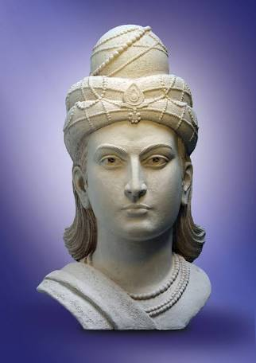

THE MAURYA DYNASTY
The Maurya Empire was a geographically extensive Iron Age historical power founded by Chandragupta Maurya which dominated ancient India between 322 BCE and 187 BCE. Extending into the kingdom of Magadha in the Indo-Gangetic Plain in the eastern side of the Indian subcontinent, the empire had its capital city at Pataliputra (modern Patna). The empire was the largest to have ever existed in the Indian subcontinent, spanning over 5 million square kilometres (1.9 million square miles) at its zenith under Ashoka.
Chandragupta Maurya raised an army and with the assistance of Chanakya (also known as Kautilya), overthrew the Nanda Empire in c.?322 BCE and rapidly expanded his power westwards across central and western India. By 317 BCE the empire had fully occupied Northwestern India, defeating and conquering the satraps left by Alexander the Great. Chandragupta then defeated the invasion led by Seleucus I, a Macedonian general from Alexander's army, gaining additional territory west of the Indus River.
The Maurya Empire was one of the largest empires of the world in its time. At its greatest extent, the empire stretched to the north along the natural boundaries of the Himalayas, to the east into Assam, to the west into Balochistan (southwest Pakistan and southeast Iran) and the Hindu Kush mountains of what is now Afghanistan. The Empire was expanded into India's central and southern regions by the emperors Chandragupta and Bindusara, but it excluded Kalinga(modern Odisha), until it was conquered by Ashoka. It declined for about 50 years after Ashoka's rule ended, and it dissolved in 185 BCE with the foundation of the Shunga dynasty in Magadha.

Under Chandragupta Maurya and his successors, internal and external trade, agriculture, and economic activities all thrived and expanded across India thanks to the creation of a single and efficient system of finance, administration, and security. After the Kalinga War, the Empire experienced nearly half a century of peace and security under Ashoka. Mauryan India also enjoyed an era of social harmony, religious transformation, and expansion of the sciences and of knowledge. Chandragupta Maurya's embrace of Jainism increased social and religious renewal and reform across his society, while Ashoka's embrace of Buddhism has been said to have been the foundation of the reign of social and political peace and non-violence across all of India. Ashoka sponsored the spreading of Buddhist missionaries into Sri Lanka, Southeast Asia, West Asia, North Africa, and Mediterranean Europe.
The population of the empire has been estimated to be about 50–60 million, making the Mauryan Empire one of the most populous empires of Antiquity. Archaeologically, the period of Mauryan rule in South Asia falls into the era of Northern Black Polished Ware (NBPW). The Arthashastra and the Edicts of Ashoka are the primary sources of written records of Mauryan times. The Lion Capital of Ashoka at Sarnath has been made the national emblem of India.
Chandragupta Maurya (reign: 321–297 BCE) was the founder of the Maurya Empire in ancient India. Of obscure origins, he was counselled and guided in his adolescent years by Chanakya, who is traditionally identified as Kau?ilya, the author of the Arthashastra (a treatise of statehood and nation building). Chandragupta, under the tutelage of Chanakya, conquered the Nanda Empireand the eastern provinces of the Seleucid Empire, thus establishing the largest empire that would exist in the Indian subcontinent. Chandragupta's life and accomplishments are described in ancient Hindu, Buddhist and Greek texts, but they vary significantly in details from the Jaina accounts. Megasthenes served as a Greek ambassador in his court for four years. In Greek and Latin accounts, Chandragupta is known as Sandrokottos and Androcottus.
Chandragupta Maurya was a pivotal figure in the history of India. Prior to his consolidation of power, Alexander the Great had invaded the northwest Indian subcontinent, but would abandon further campaigning in 324 BCE due to the presence of the Nanda Empire which ruled the Indo-Gangetic Plain. The Macedonian Empire left behind satrapies in the disputed northwestern Indian subcontinent. The region, previously being governed by the Achaemenid Empire since the conquests of Darius the Great, was once again contested over. The Indus Valley and adjoining regions would be conquered by Chandragupta during the Seleucid–Mauryan war. The Mauryan Empire would eventually extended from Bangladesh to Afghanistan, and incorporate most of the Indian subcontinent. During the reign of Chandragupta's grandson, Ashoka, the Mauryan Empire would form the largest empire documented in Indian history.
After unifying much of India, Chandragupta and Chanakya passed a series of major economic and political reforms. He established a strong central administration from Pataliputra (now Patna), patterned after Chanakya's text on governance and politics, the Arthashastra. Chandragupta's India was characterised by an efficient and highly organised structure. The empire built infrastructure such as irrigation, temples, mines and roads, leading to a strong economy. With internal and external trade thriving and agriculture flourishing, the empire built a large and trained permanent army to help expand and protect its boundaries. Chandragupta's reign, as well the dynasty that followed him, was an era when many religions thrived in India, with Buddhism, Jainism and Ajivika gaining prominence along with the Brahmanism traditions. Chandragupta is accredited to have followed Jainism later in his life. He first renounced his kingdom, and parted ways with his wealth and power. Ultimately Chandragupta, when relinquishing his kingdom, resided in Karnataka where he performed Sallekhana – the Jain religious ritual of peacefully welcoming death by fasting.
Bindusara (r. c.?297 – c.?273 BCE) was the second Mauryan emperor of India. He was the son of the dynasty's founder Chandragupta, and the father of its most famous ruler Ashoka. Bindusara's life is not documented as well as the lives of these two emperors: much of the information about him comes from legendary accounts written several hundred years after his death.
Bindusara consolidated the empire created by his father. The 16th century Tibetan Buddhist author Taranatha credits his administration with extensive territorial conquests in southern India, but some historians doubt the historical authenticity of this claim.
Buddhist sources that provide information about Bindusara include Divyavadana (including Ashokavadana and Pamsupradanavadana), Dipavamsa, Mahavamsa, Vamsatthappakasini (also known as Mahvamsa Tika or "Mahavamsa commentary"), Samantapasadika, and the 16th century writings of Taranatha. The Jain sources include the 12th century Parishishta-Parvan by Hemachandra and the 19th century Rajavali-Katha by Devachandra. The Hindu Puranas also mention Bindusara in their genealogies of Mauryan rulers. Some Greek sources also mention him by the name "Amitrochates" or its variations. Ashoka the Great, was an Indian emperor of the Maurya Dynasty, who ruled almost all of the Indian subcontinent from c.?268 to 232 BCE. The grandson of the founder of the Maurya Dynasty, Chandragupta Maurya, Ashoka promoted the spread of Buddhism. One of India's greatest emperors, Ashoka expanded Chandragupta's empire, and reigned over a realm that stretched from present-day Afghanistan in the west to Bangladesh in the east. It covered the entire Indian subcontinent except for parts of present-day Tamil Nadu, Karnataka and Kerala. The empire's capital was Pataliputra (in Magadha, present-day Patna), with provincial capitals at Taxila and Ujjain.
Ashoka waged a destructive war against the state of Kalinga (modern Odisha) which he conquered in about 260 BCE. In about 263 BCE, he converted to Buddhism after witnessing the mass deaths of the Kalinga War, a war which he himself had waged out of a desire for conquest and which reportedly had resulted in more than 100,000 deaths and 150,000 deportations, ending at around 200,000 deaths." He is remembered for the Ashoka pillars and edicts, for sending Buddhist monks to Sri Lanka and Central Asia, and for establishing monuments marking several significant sites in the life of Gautama Buddha.
Beyond the Edicts of Ashoka, biographical information about him relies on legends written centuries later, such as the 2nd-century CE Ashokavadana ("Narrative of Ashoka", a part of the Divyavadana), and in the Sri Lankan text Mahavamsa ("Great Chronicle"). The emblem of the modern Republic of India is an adaptation of the Lion Capital of Ashoka. Ashoka's name "Asoka" means "painless, without sorrow" in Sanskrit (the a privativum and soka, "pain, distress"). In his edicts, he is referred to as Devanampriya (Pali Devana?piya or "the Beloved of the Gods"), and Priyadarsin (Pali Piyadasi or "He who regards everyone with affection"). His fondness for his name's connection to the Saraca asoca tree, or "Ashoka tree", is also referenced in the Ashokavadana. H.G. Wells wrote of Ashoka in his book The Outline of History: "Amidst the tens of thousands of names of monarchs that crowd the columns of history, their majesties and graciousnesses and serenities and royal highnesses and the like, the name of Ashoka shines, and shines, almost alone, a star."